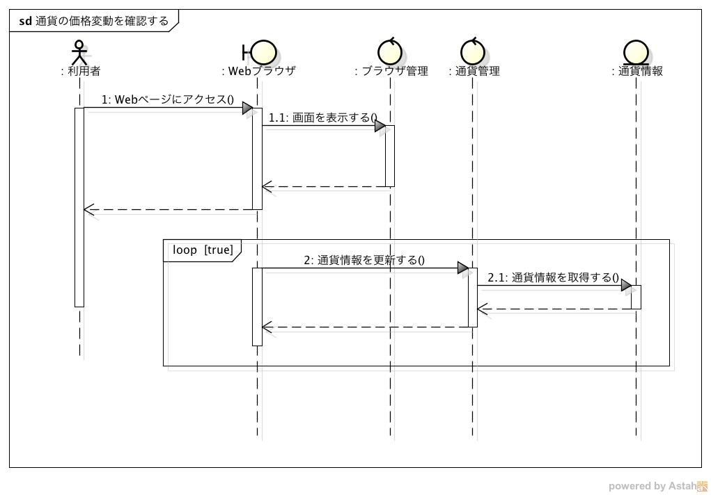
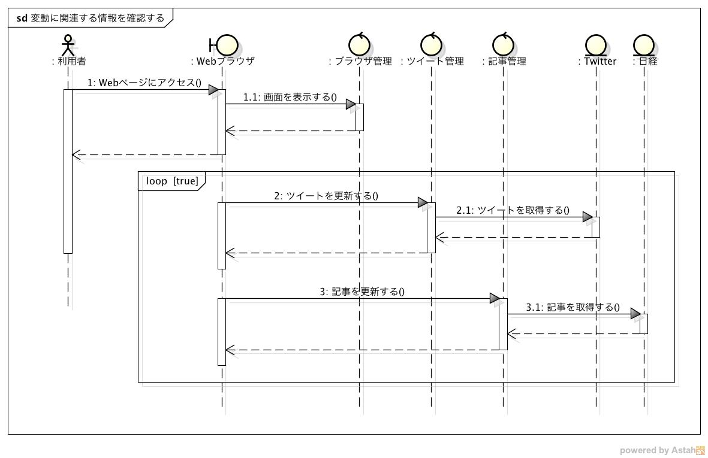
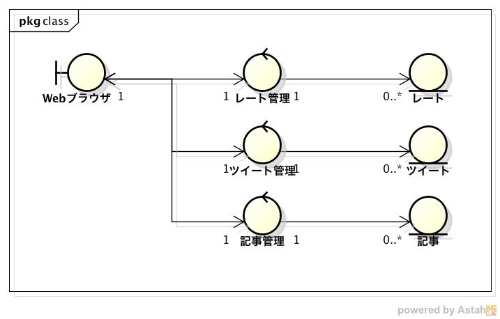

機能仕様¶
- システムの振る舞いと構造を記載する
振る舞い¶
通貨の価格変動を確認する¶
シーケンス図
- 利用者がWebページにアクセスしてからグラフを確認するまでの流れ
- ブラウザにURLを入力してシステムにアクセス
- Webページを表示
- 通貨情報を取得してグラフを作成
- 作成したグラフをブラウザに表示
- システムは常にDBから通貨情報を取得してグラフを更新する
- 通貨情報は30秒間隔でFXサイトから収集され、DBに登録される
- グラフは10秒間隔で更新される
変動に関連する情報を確認する¶
シーケンス図
- 利用者がWebページにアクセスしてから関連情報を確認するまでの流れ
- ブラウザにURLを入力してシステムにアクセス
- Webページを表示
- システムがDBからツイートを取得
- システムがDBから日経記事を取得
- 取得した情報をブラウザに表示
- システムは常にDBからツイート、日経記事を取得する
- 関連情報はTwitter, 日経から収集され、DBに登録される
- ツイートは1秒間隔で更新される
- 日経記事は10分間隔で更新される
構造¶
クラス図
- MVCモデルを利用する
- View
- Webブラウザ
- ユーザーが見れるように情報を表示するためのクラス
- Controller
- ブラウザ管理
- 通貨情報や関連情報を表示するWebページを管理するクラス
- 通貨管理
- 通貨情報を取得してブラウザに表示されている通貨情報を更新するクラス
- ツイート管理
- ツイートを取得してブラウザに表示されているツイートを更新するクラス
- 記事管理
- 記事を取得してブラウザに表示されている記事を更新するクラス
- ブラウザ管理
- Model
- 通貨情報
- FXサイトから取得した通貨情報
- 以下の情報を保持する
- 通貨情報を取得した日時
- 通貨の種類
- レート
- ツイート
- Twitterから取得したツイート
- 以下の情報を保持する
- ツイートID
- ユーザーID
- プロフィール画像のURL
- 本文
- ツイート日時
- ツイートを取得した日時
- 記事
- 日経から取得した記事
- 以下の情報を保持する
- 記事が発行された日時
- タイトル
- 要約
- 記事へのURL
- 記事を取得した日時
- 通貨情報